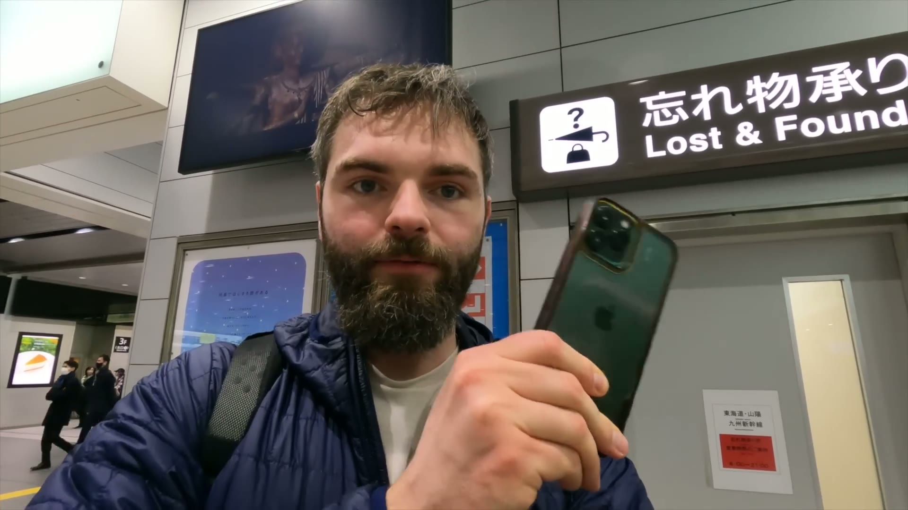
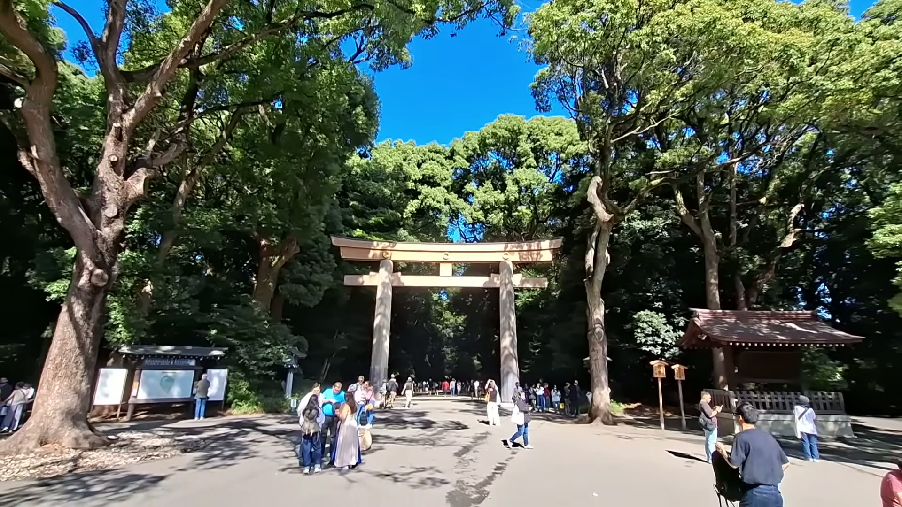
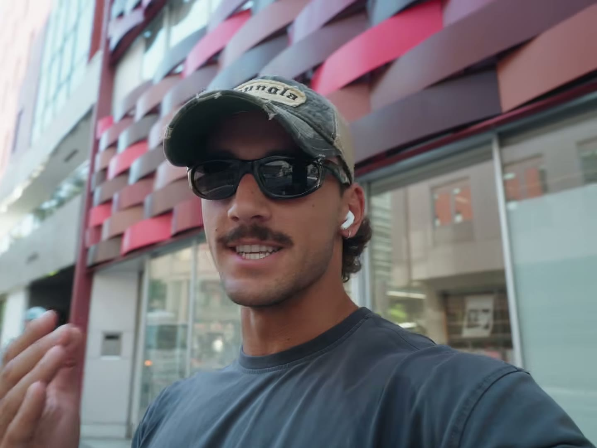

なぜ 人生まで
変わる
のか
日本
紀行
2
0
代
、
初
め
て
の
ひ
と
り
旅
日本
紀行
初めてのひとり旅
引用: Kalani James Lenehan
予約は
出発の1週間前
泊まるのは カプセルホテル
初めてのひとり旅
引用: Kalani James Lenehan
迷った先が
スクランブル交差点
「これは 現実とは思えない」
初めてのひとり旅
引用: Kalani James Lenehan
「
天国
にいるみたいだ」
唐揚げも餃子も 全部で
15ドル
初めてのひとり旅
引用: Kalani James Lenehan
日本人の友人が 泊めてくれた
3晩も
見返りなしで
家族は 車まで貸してくれた
旅の最後の、言葉
日本
紀行
初めてのひとり旅
引用: Kalani James Lenehan
人生で
最高
の旅だった
美しすぎて 何度も
泣いた
初めてのひとり旅
引用: Kalani James Lenehan
この旅は
人生を変えた
世界の見方も 人の見方も
そして
自分自身
の見方も
安心が 人を
ひらく
日本
紀行
引用: Abby and Gaz
終
終
この国を、つくってきたのは
— あなたの日常という、奇跡
当
た
り
前
は
、
世
界
の
奇
跡
日本
紀行
つくったのは、あなた
日本
紀行
4つの旅の記録
初来日の英国夫婦
驚き

新幹線の忘れ物
信頼

両脚骨折の母娘
優しさ

初めてのひとり旅
変化
日本
紀行
あなたの当たり前は
誰かの
奇跡
かもしれない
▼ 外国人に日本を褒められた体験、コメントで聞かせてください
日本
紀行
ご視聴 ありがとうございました
チャンネル登録で、次の旅の記録をお見逃しなく
日本
紀行